Note
Go to the end to download the full example code.
Cadence Diagnostics on the Default Schedule#
Survey Cadence lays out six cadence diagnostics that
SurveySchedule can compute, each as a
full-sky HEALPix map, to answer some flavor of “how well does this survey
sample transients on a particular timescale?” That page’s own runnable
examples build small synthetic schedules to keep things fast and
self-contained. Here, we instead run every one of those diagnostics against
the real thing: the default UVEX schedule, as published by the
UVEX scheduler project and
fetched via get_schedule().
Two of the six diagnostics, Pair Counts and Control-Time Curve, come
in a _curve variant that sweeps an entire array of transient timescales,
re-scanning every observed sky pixel once per timescale. That’s the right
tool for scanning “how does sensitivity change with timescale,” but on a
two-year, ~34,000-observation schedule it’s also the one part of this page
we deliberately skip: each single-timescale call below already touches every
observed pixel once, so sweeping a few dozen timescales means paying that
cost a few dozen times over. The Survey Cadence page runs
the _curve sweep itself, on a much smaller synthetic schedule built for
exactly that purpose.
Loading the default schedule#
get_schedule(), called with no
arguments, downloads and locally caches whichever schedule is registered as
config["schedules.default_schedule"]; network access is required the
first time this runs for a given schedule, after which the cached copy is
reused.
import astropy_healpix as ah
import matplotlib.pyplot as plt
import numpy as np
from astropy import units as u
from matplotlib.colors import LogNorm
from uvex_transients.surveys import get_schedule
schedule = get_schedule()
print(schedule)
n_observations = np.count_nonzero(schedule.table["action"] == "observe")
print(f"{n_observations} observations over {(schedule.end_time - schedule.start_time).to(u.day)}")
<SurveySchedule n_actions=112803 start_time='2030-01-01 00:00:00.000' end_time='2032-01-01 06:14:00.046'>
53480 observations over 730.2597227546296 d
Every diagnostic below gets the same two views: a full-sky map and a histogram over its per-pixel (or, for Successive Gaps, per-pair) values. Two helpers do the plotting for all of them.
Every quantity on this page (a count, a separation, a duration) is
strictly positive and spans several orders of magnitude between its
quietest and busiest sky pixels, so both helpers plot on a log scale
throughout: LogNorm for the map color, and
log-spaced bins for the histogram. Both settle on a single perceptually
uniform colormap, viridis, kept consistent across every plot on the
page (and echoed in the histogram bars) rather than switching palettes
diagnostic to diagnostic; it avoids the very dark, near-black low end
other sequential colormaps (e.g. magma) use, which reads poorly next
to the black axis labels and titles surrounding each plot.
nside=64 is used throughout, coarser than the nside=128 default
used elsewhere in the docs, purely to keep this page’s dozen full-sky
passes over a real two-year schedule quick to render; nothing here is
sensitive to that choice.
NSIDE = 64
HPX = ah.HEALPix(nside=NSIDE, order="nested", frame="icrs")
LON, LAT = HPX.healpix_to_lonlat(np.arange(HPX.npix))
CMAP = "viridis"
HIST_COLOR = "#21918c" # a mid-viridis teal, so the histograms read as part of the same palette.
MAP_FIGSIZE = (10, 5.5)
HIST_FIGSIZE = (9, 5.5)
def plot_healpix_map(values, title, cbar_label):
"""Aitoff-projected scatter of a full-sky HEALPix map, log-color-scaled."""
values = np.asarray(values, dtype=float)
values = np.where(values > 0, values, np.nan)
valid = np.isfinite(values)
fig = plt.figure(figsize=MAP_FIGSIZE)
ax = fig.add_subplot(111, projection="aitoff")
sc = ax.scatter(
LON[valid].wrap_at(180 * u.deg).radian,
LAT[valid].radian,
c=values[valid],
cmap=CMAP,
norm=LogNorm(vmin=np.min(values[valid]), vmax=np.max(values[valid])),
s=4,
rasterized=True,
)
ax.grid(True)
fig.colorbar(sc, label=cbar_label, pad=0.05, shrink=0.7)
ax.set_title(title)
return fig, ax
def plot_histogram(values, title, xlabel, ylabel="Pixels", n_bins=50):
"""Log-binned histogram of a strictly positive per-pixel (or per-pair) quantity."""
values = np.asarray(values, dtype=float)
values = values[np.isfinite(values) & (values > 0)]
fig = plt.figure(figsize=HIST_FIGSIZE)
plt.hist(values, bins=np.geomspace(values.min(), values.max(), n_bins), color=HIST_COLOR)
plt.xscale("log")
plt.yscale("log")
plt.xlabel(xlabel)
plt.ylabel(ylabel)
plt.title(title)
return fig
Visit Count Distribution#
The coarsest diagnostic: how many times, \(N(p)\), did an "observe"
footprint cover each HEALPix pixel \(p\). It says nothing about
when those visits happened, but it’s the right first question: every
other diagnostic on this page is only defined where \(N(p) \geq 2\).
visit_count = schedule.compute_visit_count(nside=NSIDE)
covered = np.count_nonzero(visit_count > 0)
print(f"{covered}/{visit_count.size} pixels observed ({covered / visit_count.size:.1%} of the sky)")
plot_healpix_map(visit_count, title="Visit count", cbar_label="Visits")
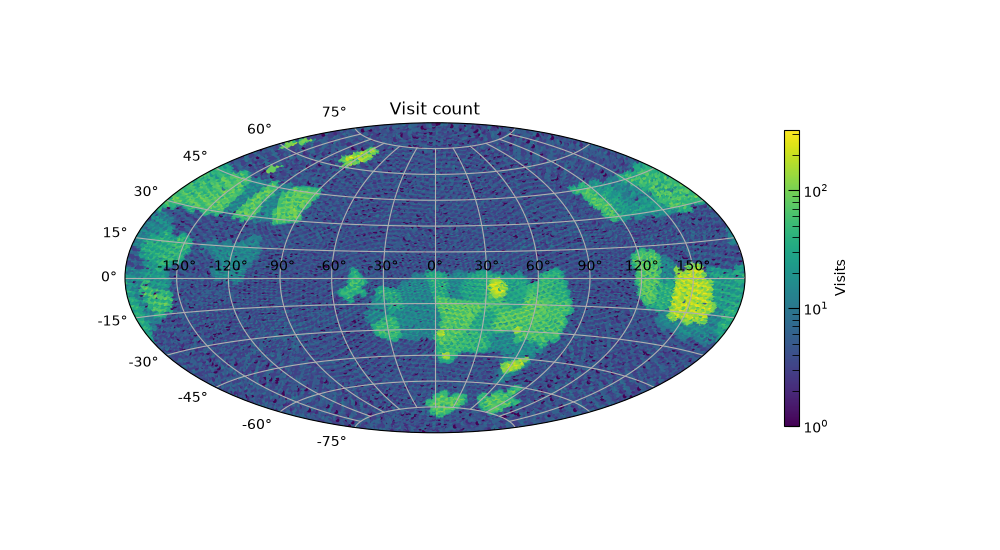
48626/49152 pixels observed (98.9% of the sky)
(<Figure size 1000x550 with 2 Axes>, <AitoffAxes: title={'center': 'Visit count'}>)
compute_visit_count_histogram()
gives the same information as a proper histogram over observed pixels:
the one below, plotted on log-log axes since a handful of heavily-revisited
pixels span orders of magnitude more visits than the typical one.
visit_counts, pixel_counts = schedule.compute_visit_count_histogram(nside=NSIDE)
observed = visit_counts > 0
fig = plt.figure(figsize=HIST_FIGSIZE)
plt.bar(visit_counts[observed], pixel_counts[observed], color=HIST_COLOR)
plt.xscale("log")
plt.yscale("log")
plt.xlabel("Visits to a pixel")
plt.ylabel("Pixels")
plt.title("Visit count histogram")
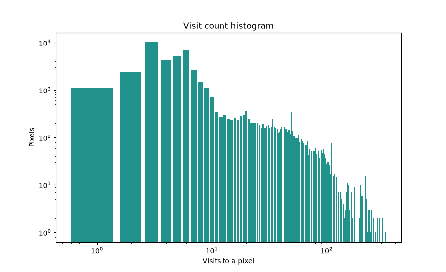
Text(0.5, 1.0, 'Visit count histogram')
Pair-wise Cadence#
For every pixel with \(N(p) \geq 2\), consider every unique pair of its
own visits and how far apart in time they fall
(compute_cadence_time_differences(),
pairs='all') and reduce that to per-pixel statistics
(compute_cadence_statistics()).
The median of that distribution is a general-purpose “how far apart in time
were the observations of this point” number, the one to compare against a
transient’s characteristic fade time to see whether typical sampling could
even resolve it.
cadence_stats = schedule.compute_cadence_statistics(nside=NSIDE, pairs="all")
median_separation = cadence_stats["median"].to_value(u.day)
plot_healpix_map(
median_separation,
title="Median pairwise separation",
cbar_label="Median separation [days]",
)
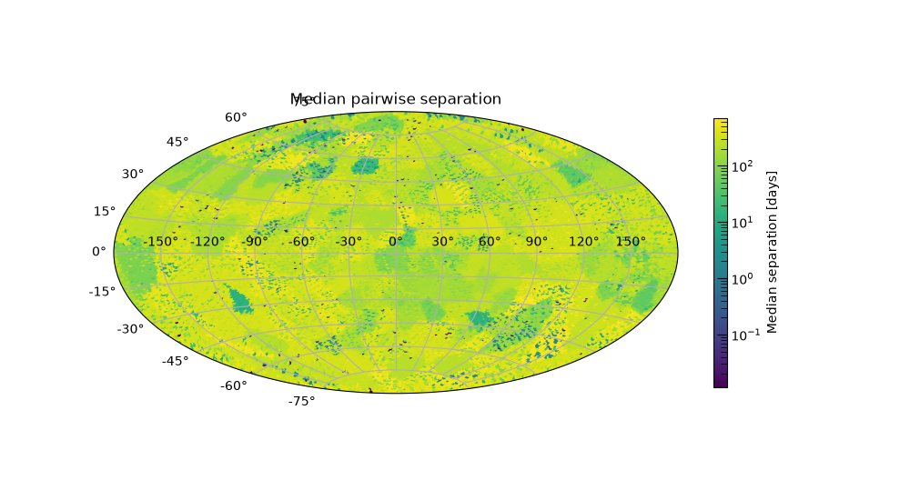
(<Figure size 1000x550 with 2 Axes>, <AitoffAxes: title={'center': 'Median pairwise separation'}>)
The same values, pooled into a histogram rather than mapped by position:
plot_histogram(
median_separation,
title="Median pairwise separation",
xlabel="Median separation [days]",
)
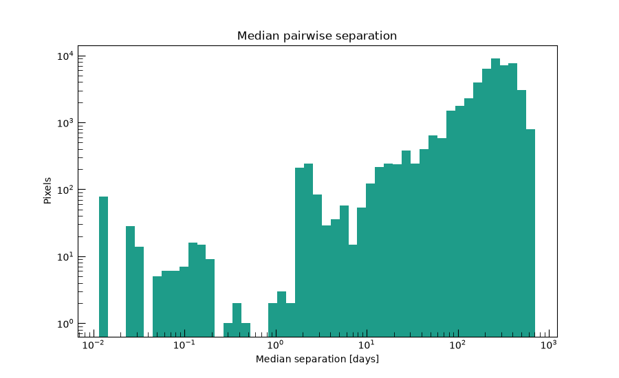
<Figure size 900x550 with 1 Axes>
Successive Gaps#
The pairs='consecutive' case of the same underlying method isolates the
gaps between one visit and the very next one. Unlike the 'all'
distribution above, it can’t be inflated by long baselines between distant,
non-adjacent revisits of the same pixel, so it’s the more literal answer to
“how long between one look and the next.”
consecutive_stats = schedule.compute_cadence_statistics(nside=NSIDE, pairs="consecutive")
median_gap = consecutive_stats["median"].to_value(u.day)
plot_healpix_map(
median_gap,
title="Median successive-visit gap",
cbar_label="Median gap [days]",
)
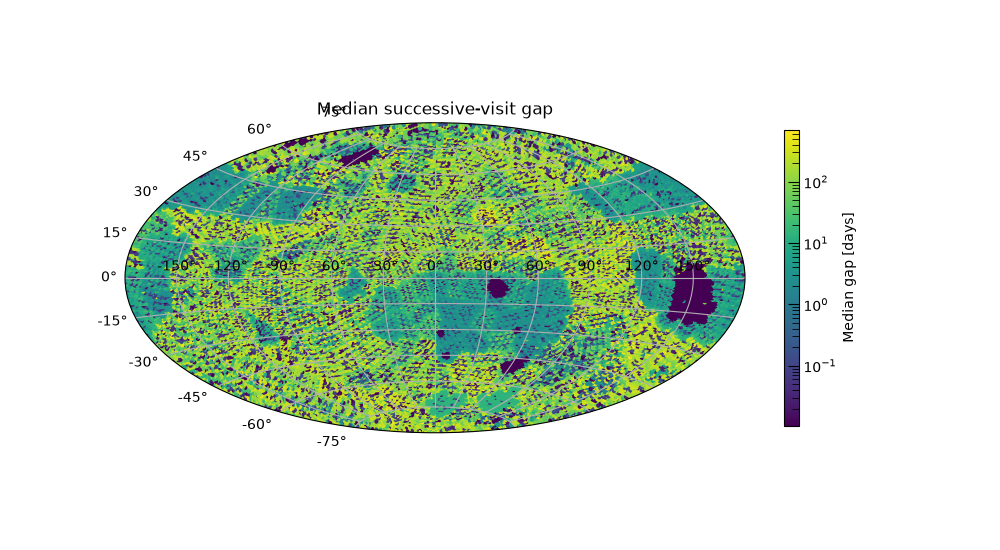
(<Figure size 1000x550 with 2 Axes>, <AitoffAxes: title={'center': 'Median successive-visit gap'}>)
Pooling every pixel’s individual successive gaps into one histogram, rather than mapping their per-pixel median as above, shows the shape of that distribution across the whole schedule at once: a sub-day peak from same-block revisits, with a long tail out toward seasonal, solar-avoidance-driven gaps.
successive_gaps, _ = schedule.compute_cadence_time_differences(nside=NSIDE, pairs="consecutive")
plot_histogram(
successive_gaps.to_value(u.day),
title="Successive-gap distribution, pooled over the whole sky",
xlabel="Successive-visit gap [days]",
ylabel="Pairs of visits",
)
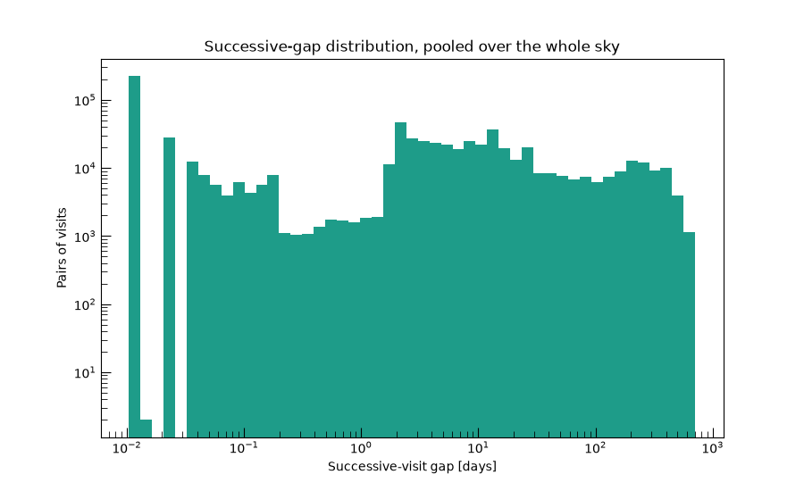
<Figure size 900x550 with 1 Axes>
Max Gap#
The single worst-case successive gap at each pixel
(compute_max_gap()):
the maximum, rather than the mean or median, of the Successive Gaps set.
A pixel can look fine on the median-gap map above and still hide one long
lapse here, e.g. across a seasonal visibility gap, during which a fast
transient could rise and fade without a single supporting observation.
max_gap = schedule.compute_max_gap(nside=NSIDE).to_value(u.day)
plot_healpix_map(max_gap, title="Worst-case successive gap", cbar_label="Max gap [days]")
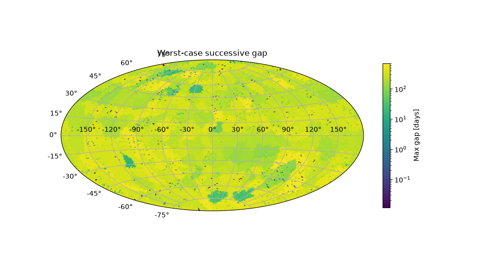
(<Figure size 1000x550 with 2 Axes>, <AitoffAxes: title={'center': 'Worst-case successive gap'}>)
The same values, pooled into a histogram rather than mapped by position:
plot_histogram(max_gap, title="Worst-case successive gap", xlabel="Max gap [days]")
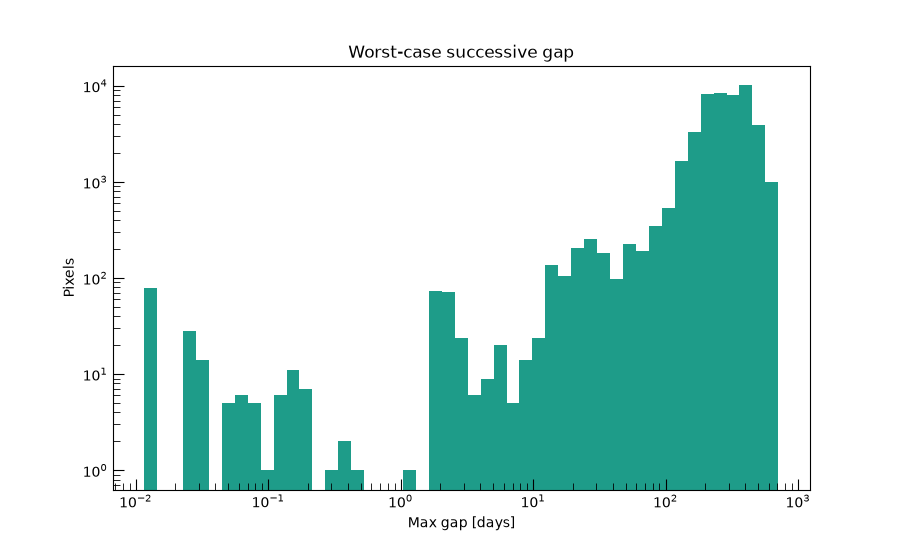
<Figure size 900x550 with 1 Axes>
Pair Counts#
The first timescale-specific diagnostic: fix a characteristic transient
timescale \(T\) (here, three days, roughly the rise-or-fade timescale
of a kilonova, one of the transient classes this package simulates) and a
qualifying separation window \([0.5T,\ 2T]\) wide enough to bracket
it. compute_pair_counts()
counts, per pixel, how many visit pairs fall in that window, and reports
the total sensitive area: the solid angle of pixels with at least one
qualifying pair at all. It’s a cheap existence question, “could this
cadence ever catch a three-day transient rising or fading here?”, not yet
“for how much of the survey.”
kilonova_timescale = 3 * u.day
pair_counts, sensitive_area = schedule.compute_pair_counts(kilonova_timescale, nside=NSIDE)
print(f"Sensitive area at {kilonova_timescale}: {sensitive_area.to(u.deg**2):.1f}")
plot_healpix_map(
pair_counts,
title=f"Qualifying pairs for a {kilonova_timescale} timescale",
cbar_label="Qualifying pairs",
)
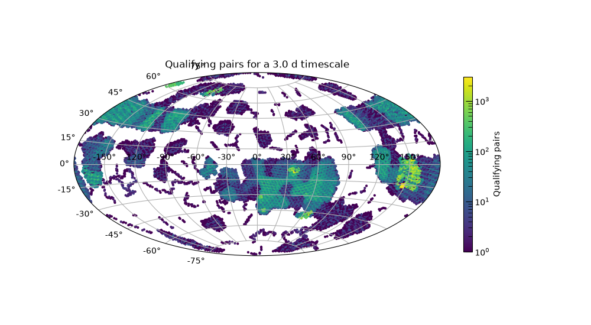
Sensitive area at 3.0 d: 14907.5 deg2
(<Figure size 1000x550 with 2 Axes>, <AitoffAxes: title={'center': 'Qualifying pairs for a 3.0 d timescale'}>)
The same values, pooled into a histogram rather than mapped by position:
plot_histogram(
pair_counts,
title=f"Qualifying pairs for a {kilonova_timescale} timescale",
xlabel="Qualifying pairs",
ylabel="Pixels",
)
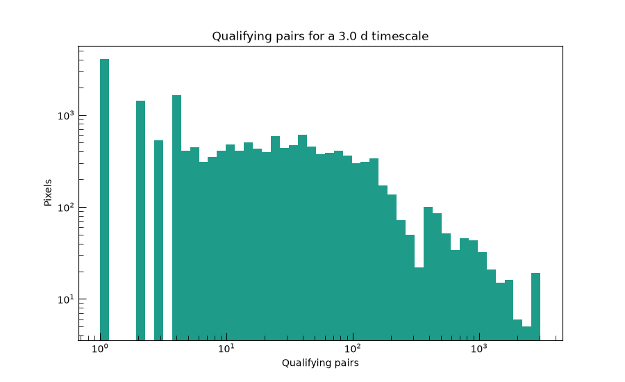
<Figure size 900x550 with 1 Axes>
Control Time#
compute_control_time()
refines Pair Counts from “does a qualifying pair exist” to “for how much
of the survey would a transient starting here actually be caught.” That
distinguishes a pixel with one lucky qualifying pair from one with
continuous, repeated cadence support at this timescale, something Pair
Counts alone can’t tell apart. This is the single-timescale half of the
diagnostic; sweeping it into a curve over many timescales
(compute_control_time_curve())
is exactly the sweep this page skips. See Survey Cadence
for that version, run on a small synthetic schedule.
control_time, exposure = schedule.compute_control_time(kilonova_timescale, nside=NSIDE)
print(f"Area-time exposure at {kilonova_timescale}: {exposure.to(u.deg**2 * u.day):.1f}")
control_time_days = control_time.to_value(u.day)
plot_healpix_map(
control_time_days,
title=f"Control time for a {kilonova_timescale} timescale",
cbar_label="Control time [days]",
)
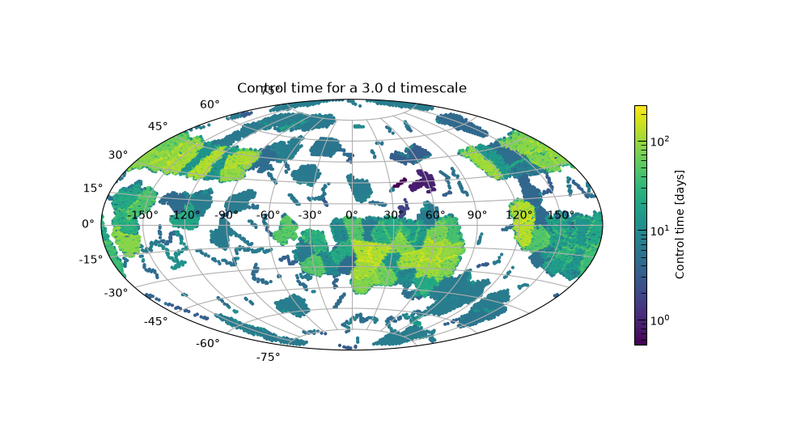
Area-time exposure at 3.0 d: 574858.1 deg2 d
(<Figure size 1000x550 with 2 Axes>, <AitoffAxes: title={'center': 'Control time for a 3.0 d timescale'}>)
The same values, pooled into a histogram rather than mapped by position:
plot_histogram(
control_time_days,
title=f"Control time for a {kilonova_timescale} timescale",
xlabel="Control time [days]",
)
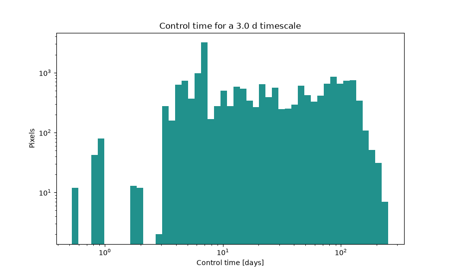
<Figure size 900x550 with 1 Axes>
Total running time of the script: (1 minutes 39.581 seconds)